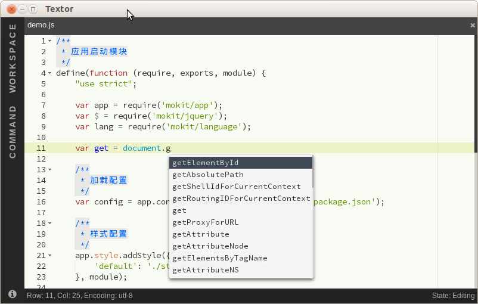

Documentation | Extension API | Extension List | Release Notes (0.4.8) | Discussion
Mac
Windows
Linux
You only need to select a directory or file, start writing immediately.
 Textor
TextorDocumentation | Extension API | Extension List | Release Notes (0.4.8) | Discussion
You only need to select a directory or file, start writing immediately.